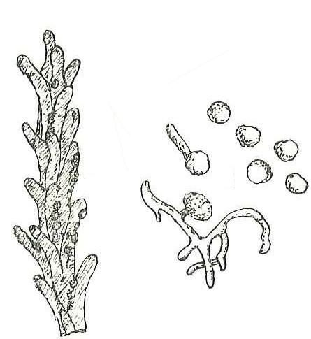

गेहूँ का कंडुआWheat Loose Smut
Ustilago tritici · Ustilaginaceae · FNG-0023

- Scientific name वैज्ञानिक नाम
- Ustilago tritici (Pers.) Rostr.
- Family कुल
- Ustilaginaceae
- Hindi हिंदी
- गेहूँ का कंडुआ
- Local names स्थानीय नाम
- gehun ka kandua, kandua, kandua rog, loose smut
- Status here यहाँ की स्थिति
- native
- Movement आवागमन
- Resident, here all year
- IUCN IUCN
- not evaluated
- Review समीक्षा
- audited and independently read
When to look कब देखें
Expected mainly in March, April. मुख्यतः मार्च, अप्रैल में अपेक्षित।
गेहूँ का कंडुआ / Wheat Loose Smut
Ustilago tritici (Pers.) Rostr. — Ustilaginaceae
गेहूँ का कंडुआ (कंडुआ = काला धूल) — गेहूँ की बालियों में से काली धूल उड़ता है, वह कंडुआ है। गेहूँ की बाली में जहाँ दाने होने चाहिए, वहाँ इस रोग में सिर्फ काली धूल भर जाती है। जनवरी-फरवरी में बोए गए गेहूँ में मार्च-अप्रैल में, अगर संक्रमित बीज लगाया गया हो, तो हर दसवाँ या बीसवाँ पौधा बीमार हो जाता है। दाने की जगह काली धूल का मतलब: उज़र, भूसी में नुकसान। अच्छा बीज बोना इसका एकमात्र रक्षा है।
Quick Identification त्वरित पहचान
| Feature | Description |
|---|---|
| Spike symptom | Inflorescence (spike) is largely or entirely converted to black spore mass (sorus) |
| Spore appearance | Loose, friable, black powder; easily blown away by wind or disturbed by handling |
| Grain replacement | Grains are completely replaced by the spore mass; no grain tissue remains |
| Spike structure | The spike may be stunted or remain elongated; the rachis (central axis) is often visible beneath the spore mass |
| Affected plants | Disease appears on scattered individual plants in the field; not all plants are affected (unlike covered smut, which is more sporadic) |
| Field appearance | At flowering stage (March–April in eastern UP), affected spikes are visible as black, sooty structures among normal green/golden wheat |
| Spore dispersal | Spores fall and spread with wind and water; highly visible when the field is disturbed |
| Timing of symptoms | Visible at spike emergence (Z51 growth stage) and increasingly apparent at flowering (Z65) |
Field tip: Walk through a wheat field in late March or early April during spike emergence and flowering. Look for individual plants with black, sooty spikes standing out among the normal wheat. Touch or brush a sick spike gently — the black dust comes off, coating your hand. This is loose smut. It is most visible during and shortly after anthesis (flowering) when the spore mass is fully mature.
हिंदी — कैसे पहचानें: मार्च-अप्रैल में गेहूँ की बाली काली-भूरी हो जाती है। उँगली से छुओ तो काली धूल निकल जाती है। हर दसवाँ या बीसवाँ पौधा। पूरी बाली काली हो जाती है, दाना नहीं दिखता।
Morphology and Symptomatology आकृति और लक्षण
Fungal structures (visible with microscope and macroscopically):
| Structure | Appearance |
|---|---|
| Teliospore (smut spore) | Unicellular, thick-walled, globose to slightly irregular, 7–12 × 6–11 µm; dark brown to black; ornamented with fine ridges or warts (echinulate surface) |
| Sorus (spore mass) | Black, powdery, friable; composed of millions of teliospores held in a gelatinous matrix that breaks down as it dries |
| Mycelium | Thread-like, colonizing florets and replacing the developing grain; not visibly distinct |
| Colour in field | Black, sooty; distinctive against the golden-brown colour of mature wheat |
Disease progression:
- Seed infection: Fungus colonizes the embryo and tissues of infected wheat grain (infection is internal, not visible externally)
- Seedling stage: Mycelium grows along with the seedling; infection is systemic (throughout the plant) but hidden
- Heading to anthesis: As the florets develop, mycelium invades the developing grain
- Grain replacement: The entire grain is replaced by a black spore mass (sorus)
- Spore maturation: Spores mature and become loose and friable; easily dispersed by wind and water
Life Cycle / Phenology जीवन चक्र
In eastern UP (winter wheat crop: November–April):
| Stage / Month | Event | Notes |
|---|---|---|
| October | Seed selection and preparation; infected seed is indistinguishable from healthy seed (infection is internal) | CRITICAL: Farmers using infected seed will have disease; using clean seed prevents disease |
| November–December | Sowing; seedlings germinate; internal mycelium grows with the seedling | Hidden infection; no visible symptoms; mycelium is systemic throughout the plant |
| January–February | Tillering and vegetative growth; mycelium continues to grow; plant appears normal | Disease is invisible to the naked eye; internal colonization is occurring |
| March (growth stage Z41–Z51) | Spike emergence; florets are developing | Mycelium is now invading the developing grain and florets |
| March–April (Z65–Z69) | CRITICAL SYMPTOM PERIOD — Anthesis (flowering); florets open; mycelium actively replaces grain with spore mass | Spore masses are visible as black, sooty structures. Spores are mature and easily dispersed by wind and water. |
| April–May | Grain maturation would occur; instead, spore mass dries and fragments | Loose smut spores are easily blown away; each spike can scatter billions of spores into the air |
| Harvest | Remaining spores are threshed with grain; can contaminate harvested grain and seed stock | Seed borne with spores will carry infection to next crop |
| Overwintering | Spores survive in seed; fungus overwinters as dormant mycelium in the seed embryo | Spores can remain viable for years if stored dry |
Inoculum source: The primary source of inoculum for eastern UP wheat is infected seed brought from other states (particularly hills where disease is endemic) or carried over from the previous year's harvest. Soil-borne spores play a minor role in cool, dry conditions of UP plains.
हिंदी — जीवन चक्र: संक्रमित बीज से शुरू। अंकुरण से मार्च तक कवच के अंदर। मार्च में बाली बनते समय दाने की जगह काली धूल। अप्रैल में हवा में मिलती है। अगली फसल में संक्रमित बीज लगने से फिर से।
Ecology and Substrate पारिस्थितिकी और आधार
Obligate plant pathogen: Ustilago tritici is an obligate biotroph that requires living wheat tissue for growth and reproduction. Unlike U. nuda (covered smut), it does not require soil-borne spores for infection.
Infection mechanism:
- Seed infection: Mycelium colonizes the wheat embryo; the fungus is hidden inside the seed
- Systemic infection: The mycelium grows within and alongside the wheat plant throughout its life
- No external infection needed: Unlike many plant pathogens, U. tritici does not infect plants from soil or external spores; it is entirely dependent on infected seed
Temperature and moisture: The fungus grows best in cool (15–20°C) conditions. Infection is most effective at moderate moisture; very wet or very dry conditions inhibit infection.
Host specificity: Primarily attacks wheat; can rarely infect other Triticum species and some grasses but is not virulent on them.
Agricultural / Human Relevance कृषि प्रासंगिकता
Economic impact:
- Yield loss: 10–30% depending on disease incidence (percentage of plants affected) and the value of seed wheat
- Quality loss: Contaminated seed stock cannot be sold as high-quality seed; reduces market value
- Severity in India: Loose smut is endemic in hill wheat-growing regions (Himalayas, parts of Western Ghats); epidemics in plains occur when infected seed is used
- Global importance: One of the oldest plant diseases known; documented for centuries; now rare in countries with strict seed-certification systems
Management — in order of priority:
- Disease-free seed (MOST EFFECTIVE):
- Certified seed source: Use seed from recognized wheat seed certification agencies (ICAR institutions, state seed agencies, or registered private seed companies)
- Seed certification standards: Certified seed is tested and guaranteed to be free of loose smut and other pathogens
- Cost: Certified seed is ₹50–100 per kg more expensive than farmer-saved seed; justified by disease prevention
- Inspection and selection: Farmers should inspect their own seed before sowing and discard any batches showing signs of disease
- Seed treatment (SUPPLEMENTARY):
- Hot-water treatment: Soak seed in hot water (50–52°C) for 10 minutes, then cool rapidly; kills internal mycelium
- Fungicide treatment: Seed dressing with Carbendazim (Bavistin, 0.1%) or Thiram can suppress but does not entirely eliminate seed-borne mycelium
- Effectiveness: Hot-water treatment is more effective than fungicide for this disease
- Resistant varieties (RARELY NEEDED):
- Most modern wheat varieties have good resistance
- Older susceptible varieties should be avoided
- Field management:
- Rogue out: Remove affected plants by hand before flowering if loose smut appears in the field (rare, but possible if new inoculum enters)
- Isolation: If seed-production fields are grown, isolate them from farmer's fields to prevent cross-contamination
- Integrated approach for farmers:
- Primary control: Use certified, disease-free seed
- Seed treatment: If using farmer-saved seed, treat with hot water before sowing
- Monitoring: Inspect fields in March–April; note percentage of plants with loose smut
- Seed saving: Never save seed from fields with loose smut; source certified seed for next crop
Government support:
- Wheat Directorate and state extension departments promote disease-free seed and seed certification
- Seed certification agencies inspect and certify wheat seed for diseases including loose smut
हिंदी — रोकथाम: अच्छा, प्रमाणित बीज बोओ। अपना बीज बोने हों तो पहले गर्म पानी में (50°C, 10 मिनट) भिगो देना। अगर मार्च में कंडुआ दिख जाए तो बीमार पौधे निकाल देने चाहिए।
Expected Locally स्थानीय रूप से अपेक्षित
Not a field record. Written from published accounts for eastern Uttar Pradesh. No confirmed local sighting yet — if you have seen it, that is what the atlas needs.
अभी तक स्थानीय पुष्टि नहीं। यह विवरण प्रकाशित स्रोतों से है, किसी अवलोकन से नहीं।
Loose smut is expected in Basti and Ayodhya districts only when infected seed from endemic regions (hills, seed-multiplication areas with history of disease) is planted. In years when farmers use certified, disease-free seed, loose smut is rare or absent. In fields where farmer-saved seed is used without treatment, and especially if that seed came from a region with loose smut history, disease incidence can reach 1–5% of plants.
The disease is much less common than wheat leaf rust in eastern UP due to the use of certified seed in most government-supported farming schemes. However, it remains a potential threat in areas where seed certification is not practiced.
Distribution वितरण
Global range: Found in temperate and cool-season wheat-growing regions worldwide, particularly where winter wheat is grown.
In India: Endemic in hill wheat-growing regions (Himalayas, parts of Western Ghats); sporadic in plains where infected seed is introduced.
In Uttar Pradesh: Most common in wheat-growing hills (Garhwal, Kumaon); present in plains only where infected seed is imported or carried over from previous crops.
In Basti district / eastern UP: Expected only in farmers' fields that use infected seed from other regions. With the promotion of certified seed, disease incidence has decreased significantly.
Research Questions शोध प्रश्न
- In your village, what percentage of wheat shows loose smut at flowering (March–April)? / आपके गाँव में गेहूँ में कितने प्रतिशत कंडुआ है? — Survey 5 fields; count plants with black spikes; calculate percentage.
- Do farmers who use certified seed show less loose smut than those who use farmer-saved seed? — Compare two groups of farmers; measure disease incidence at flowering.
- If you treat farmer-saved wheat seed with hot water (50°C for 10 minutes) before sowing, is loose smut reduced in the resulting crop? — A simple treatment trial comparing hot-water-treated vs. untreated seed.
- Where did farmers source their wheat seed this year (certified agency, farmer's own stock, neighbouring farmer)? — Survey 10 farmers; correlate seed source with disease incidence.
- Are certified wheat seeds available in your block, and at what price? — Ask seed dealers and agricultural extension officers about availability and cost.
Similar Species मिलती-जुलती प्रजातियाँ
| Disease | How to tell apart | हिंदी |
|---|---|---|
| Covered Smut (Ustilago nuda) | The inflorescence is partially covered by a membrane (palea and lemma) that contains the spore mass; spores are NOT loose and free; the outer bracts are intact | बाली के खोल में धूल बंद रहती है |
| Black Point (fungal blight affecting grain) | Individual grains show dark discolouration but are not replaced entirely by smut spores; grain tissue persists | दाने पर काले दाग; दाना रहता है |
| Ergot (Claviceps purpurea) | Purple or reddish, hard, club-shaped sclerotia replace grains; much larger (5–10 mm) and more distinctive than smut spores; toxic | बड़ी, सख़्त, बैंगनी चीज़; ज़हरीली |
Field rule: Loose, black, friable spore mass replacing the entire grain in a wheat spike in March–April, easily blown away by wind or rubbed off by hand, is loose smut. Spores are visibly loose and free, unlike covered smut where they are enclosed in the floral membrane.
Taxonomy & Classification वर्गीकरण
Original description. Ustilago tritici was described by Persoon in 1801 as Uredo tritici. It was reclassified to Ustilago by Rostrüp in 1890, reflecting its morphology and life cycle.
Subspecies. No subspecies are formally recognized.
Family and order placement. Order Ustilaginales, family Ustilaginaceae. Ustilago is the largest genus of smut fungi, containing approximately 100 species, many of which are cereal pathogens.
Phylogenetic notes. Ustilago tritici is closely related to U. nuda (covered smut of wheat) and U. avenae (loose smut of oats). The two wheat smuts diverged relatively recently, suggesting ecological speciation.
IUCN status rationale. Not evaluated. As an obligate plant pathogen maintained by infected seed, its conservation status is not applicable. Its management is an agricultural priority.
Photo Gallery फोटो गैलरी
Photos needed आवश्यक फोटो
- [ ] Wheat spike completely converted to loose black spore mass (काली बाली)
- [ ] Close-up of teliospores under magnification showing ornamentation (माइक्रोस्कोप में)
- [ ] Comparison of healthy and diseased spikes in the field (तुलना)
No photos yet — add field photos to media/species/loose_smut/ and run node scripts/sync_photos.js.
References संदर्भ
- Persoon, C.H. (1801). Synopsis Methodica Fungorum (cited as Uredo tritici)
- Rostrüp, F.O. (1890). Fungi Groenlandici [reclassification to Ustilago]
- Roelfs, A.P., Singh, R.P. & Saari, E.E. (1992). Rust Diseases of Wheat: Concepts and Methods of Disease Management. CIMMYT, Mexico. [wheat disease context]
- Indian Council of Agricultural Research — Directorate of Wheat Research (2021). Wheat Diseases and Management. ICAR-DWR, Agra.
- Uttar Pradesh Agriculture Department (2020). Wheat Disease Management Guidelines. Government of Uttar Pradesh, Lucknow.
- GBIF Occurrence Data — Ustilago tritici, India (2026).
Source file: species/fungi/molds/loose_smut.md